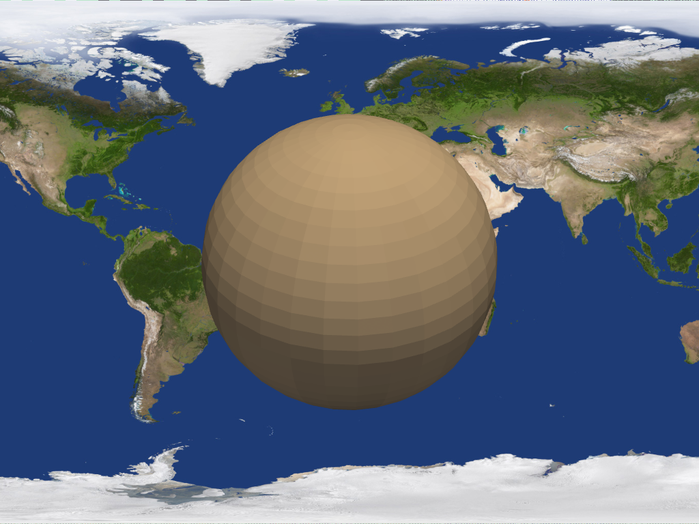

add_background_image#
- Plotter.add_background_image(image_path, scale=1, auto_resize=True, as_global=True)#
Add a background image to a plot.
- Parameters
- image_path
str Path to an image file.
- scale
float,optional Scale the image larger or smaller relative to the size of the window. For example, a scale size of 2 will make the largest dimension of the image twice as large as the largest dimension of the render window. Defaults to 1.
- auto_resizebool,
optional Resize the background when the render window changes size.
- as_globalbool,
optional When multiple render windows are present, setting
as_global=Falsewill cause the background to only appear in one window.
- image_path
Examples
>>> import pyvista >>> from pyvista import examples >>> plotter = pyvista.Plotter() >>> actor = plotter.add_mesh(pyvista.Sphere()) >>> plotter.add_background_image(examples.mapfile) >>> plotter.show()
